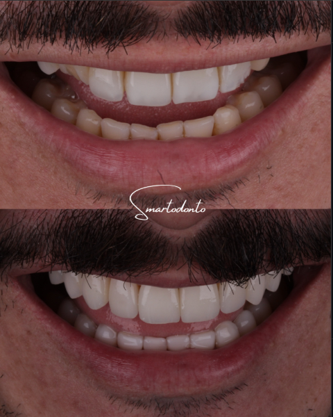

Resina composta
Restaurações
Restaurações em resina composta fotopolimerizável recuperam a estrutura perdida por cárie, fratura ou desgaste, devolvendo função e estética em uma única sessão na maioria dos casos.
Técnica incremental
O tecido cariado ou comprometido é removido de forma seletiva e a resina é aplicada em camadas, respeitando a anatomia e o contato oclusal com os dentes antagonistas.
Seleção de cor
Escalas de cor específicas garantem que a restauração se integre visualmente ao restante do dente e aos dentes vizinhos.
Reparos pontuais
A mesma técnica também é usada para fechar pequenos diastemas ou corrigir bordas desgastadas, sem necessidade de faceta completa.
Quando procurar
- Cárie diagnosticada em exame clínico ou radiográfico
- Fratura de pequena a média extensão
- Desgaste por bruxismo
- Substituição de restaurações antigas infiltradas